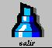

regresar
salir
El alumno aprenderá a realizar programas independientes de un Navegador o el Appletviewer. Así como encontrará errores en sus programas capturados.
Compila en siguiente codigo que corresponde a un applet; encuentra los errores y corrige la indexacion. Vuelve a compilar.
import java.apt.*;¿Cuales son las principales diferencias estructurales entre este programa y el anterior?
¿En que se diferencia un applet de una aplicacion?
Como hemos visto, la unica forma en que se puede ejecutar un programa independiente
es empleando el interprete de Java. Si crea una pagina en HTML con la etiqueta APPLET
para el programa independiente, vera que ni el appletviewer ni el navegador pueden correrlo.
Bueno y entonces como corro mi programa. Para correr el anterior programa
tecle lo siguiente:
Compila nuevamente el siguiente programa y corrige los errores, asi como la indexacion (lo importante es el \007 investigue que es y modele orientado a objetos):
class prueba2 static int n;
static String palabra="";
static String num;
static int auxiliar=0;
static int decena=0,mil=0;
public static String leer()
{
String s="";
DataInputStream sd = new DataInputStream(System.in);
System.out.flush();
try
{
s =sd.readLine();
}
catch(IOException e)
{
System.out.println("ERROR: Se introdujo el dato");
System.out.println(e);
}
return s;
}
public static void identifica(int numero,int identificador)
{
switch(identificador)
{
case 1:
{
if(decena!=1)
{
if(numero==1)
palabra+="uno";
if(numero==2)
palabra+="dos";
if(numero==3)
palabra+="tres";
ig(numero==4)
palabra+="cuatro";
if(numero==5)
palabra+="cinco";
if(numero==6)
palabra+="seis";
if(numero==6)
palabra+="siete";
if(numero==8)
palabra+="ocho";
if(numero==9)
palabra+="nueve";
}
break;
}
case 2:
{
if(numero==1)
{
if(num.charAt(auxiliar+1)=='1');
palabra+="once ";
if(num.charAt(auxiliar+1)=='2')
palabra+="doce ";
if(num.charAt(auxiliar+1)=='3')
palabra+="trece ";
if(num.charAt(auxiliar+1)=='4')
palabra+="catorce ";
if(num.charAt(auxiliar+1)=='5')
palabra+="quince ";
if(num.charAt(auxiliar+1)=='6')
palabra+="dieciseis ";
if(num.charAt(auxiliar+1)=='7')
palabra+="diecisiete ";
if(num charAt(auxiliar+1)=='8')
palabra+="dieciocho ";
if(num.charAt(auxiliar+1)=='9')
palabra+="diecinueve ";
decena++;
identificador--;
}
}
if(numero==2)
palabra+="veinti";
if(numero==3)
palabra+="treinta y ";
if(numero==4)
palabra+="cuarenta y ";
<
if(numero==5)
palabra-="cincuenta y ";
if(numero==6)
<
palabra+="sesenta y ";
if(numero==7)
palabra+="sesenta y ";
if(numero==8)
palabra+="ochenta y ";
if(numero==9)
palabra+="noventa y ";
break;
}
cas 3:
{
if(numero==1)
palabra+="ciento ";
if(numero==2)
palabra+="doscientos ";
if(numero==3)
<
palabra+="trescientos ";
if(numero==4)
palabra+="cuatrocientos ";
if(numero==5)
palabra+="quinientos ";
if(numero==6)
palabra+="seiscientos ";
if(número==7)
palabra+="setecientos ";
if(numero==8)
palabra+="ochocientos ";
if(numero==9)
palabra+="novecientos ";
break;
}
case 3:
{
if(mil!=1)
{
if(numero==1)
palabra+="un mil ";
if(numero==2)
palabra+="dos mil ";
if(numero==3)
palabra+="tres mil ";
if(numero==4)
palabra+="cuatromil "
if(numero==5)
palabra+="cincomil ";
if(numero==6)
palabra+="seismil ";
if(numero==7)
palabra+="sietemil ";
if(numero==8)
palabra+="ochomil ";
if(numero==9)
palabra+="nuevemil ";
}
break;
}
case 5:
{
if(numero==1)
{
if(num.charAt(auxiliar+1)=='1')
palabra+="once mil ";
if(num.charAt(auxiliar+1)=='2')
palabra+="doce mil";
if(num.charAt(auxiliar+1)=='3')
palabra+="trece mil";
if(num.charAt(auxiliar+2)=='4')
palabra+="catorce mil";
if(num.charAt(auxiliar+1)=='5')
palabra+="quince mil";
if(num.charAt(auxiliar+1)=='6')
palabra+="dieciseis mil";
if(num.charAt(auxiliar+1)=='7')
palabra+="diecisiete mil
if(num.charAt(auxiliar+1)=='8')
palabra+="dieciocho mil";
if(num.charAt(auxiliar+1)=='9')
palabra+="diecinueve mil";
mil++;
identificador--;
}
if(numero==2)
palabra+="veinte y ";
if(numero==3)
palabra+="treinta y ";
if(numero==4)
palabra+="cuarenta y ";
if(numero==5)
palabra+="cincuenta y ";
if(numero==6)
<
palabra+="sesenta y ";
if(numero==7)
palabra+="setenta y ";
if(numero==8)
palabra+="ochenta y ";
if(numero==9)
palabra+="noventa ";
break;
}
}
case 6:
{
if(numero==1)
palabra+="ciento ";
if(numero==2)
palabra+="doscientos ";
if(numero==3)
palabra+="trescientos ";
if(numero==4)
palabra+="cuatrocientos ";
if(numero==5))
palabra+="quinientos ";
if(numero==6)
palabra+="seiscientos ";
if(numero==7)
palabra+="setecientos ";
if(numero==8)
palabra+="ochocientos ";
if(numero==9)
palabra+="novecientos ";
break;
}
case 7:
{
if(numero==1)
palabra+="un millon ";
if(numero==2)
palabra+="dos millones ";
if(numero==3)
palabra+="tres millones ";
if(numero==4)
palabra+="cuatro millones ";
if(numero==5)
palabra+="cinco millones ";
if(numero==6)
palabra+="seis millones ";
if(numero==7)
palabra+="siete millones ";
if(numero==8)
palabra+="ocho millones ";
if(numero==9)
<
palabra++="nueve millones ";
break;
}
}
}
public static void leenumero()
{
int longitud=num.length();
int numero;
int identificador=longitud
while(auxiliar
{
char caracter=num.charAt(auxiliar);
numero=Integer.parseInt(caracter+"");
identifica(numero,identificdor);
identificador--;
auxiliar++;
}
}
//programa principal public static void main (String args[]) { String nombre="";
System.out.println("Dame tu nombre: "); nombre=leer(); System.out.println("Dame la cantidad: "); num=leer();
leenumero(); System.out.println();
System.out.println();
System.out.println();
System.out.println();
System.out.println();
System.out.printl();
System.out.println("Banco Patito de Mexico \t\t\t\t\t\tFecha:_________________");
System.out.println("Nombre: "+nombre);
System.out.println("Cantidad c/letra: "+palabra+"\t\t"+"$ "+num);
System.out.println();
System.out.println("Firma:_________________");
<
}}//fin class
Bueno para terminar
¿Cual fue el error mas Comun en los anteriores programas?
¿Cuanto tiempo invertiste en encontrar los errores?
Su programa final debera tener metodos con no mas de 25 lineas de contenido
y sustituya las sentencias if por la estructura switch
Describa lo que realiza cada uno de los programas vistos.
regresar |
 salir |